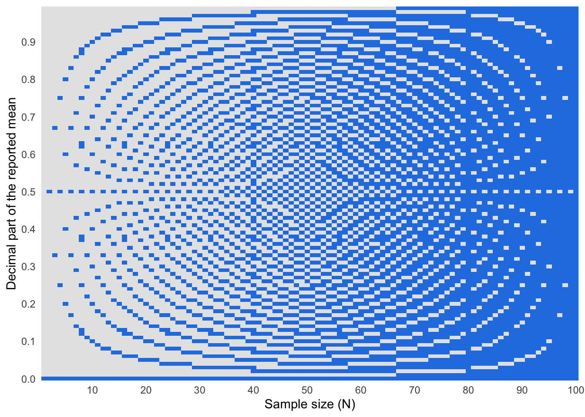
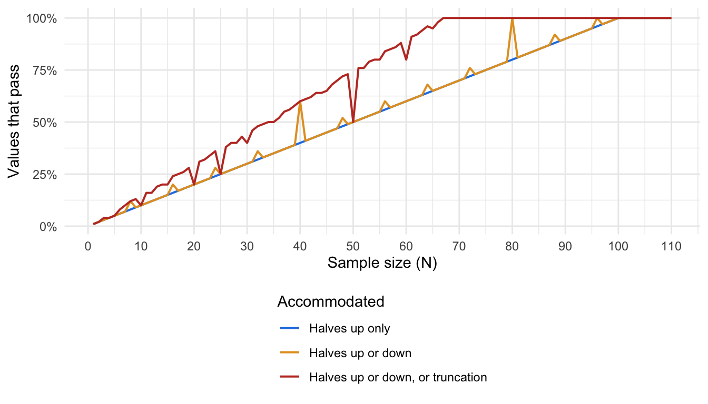
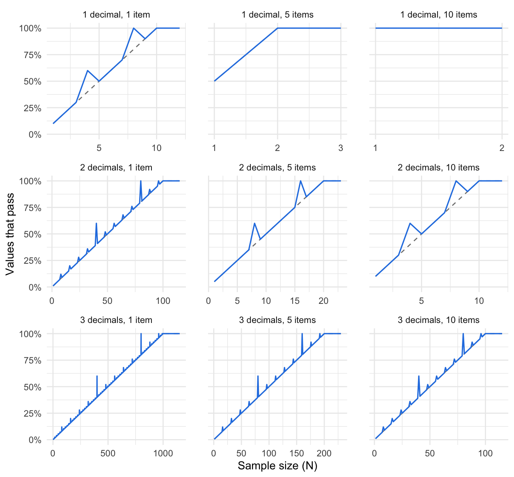
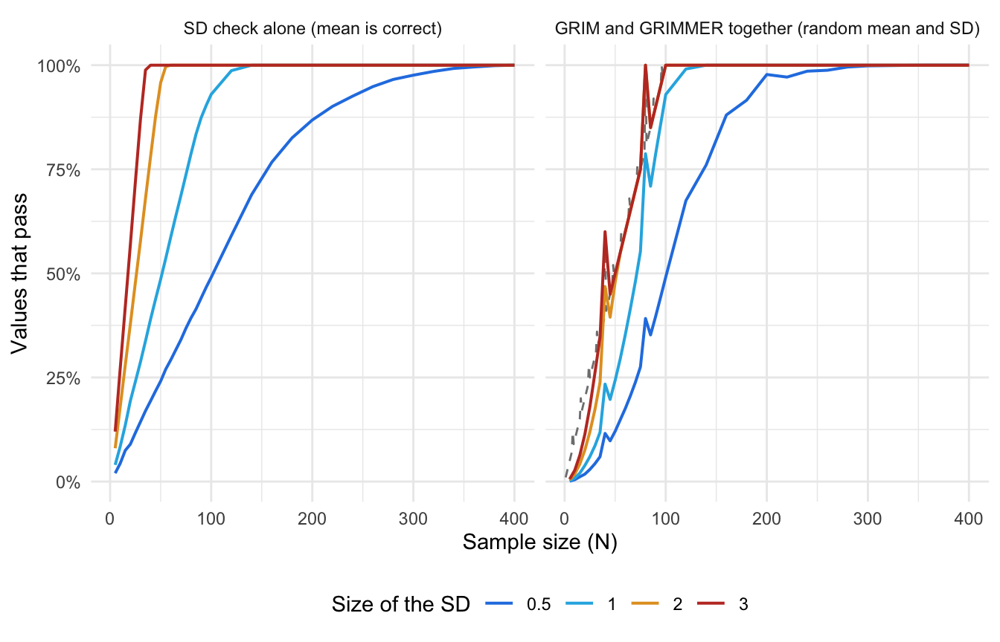

viewof grim1Mean = Inputs.number({label: "Reported mean", value: 23.16, step: 0.01, width: 90})
viewof grim1N = Inputs.range([2, 100], {label: "Sample size (N)", step: 1, value: 2})
viewof grim1Digits = Inputs.select([1, 2], {label: "Decimal places", value: 2})
viewof grim1Items = Inputs.number({label: "Items averaged into each participant's score", value: 1, step: 1, min: 1, width: 90})
viewof grim1Rounding = Inputs.select(new Map([["Up or down", "up_or_down"], ["Half up", "up"]]), {label: "Rounding", value: "up_or_down"})
viewof grim1Zoom = Inputs.radio(new Map([["Low", 1], ["Medium", 0.5], ["High", 0.25]]), {label: "Zoom", value: 0.5})11 Granularity methods ✎ Draft
11.1 Granularity
Imagine a study where two participants are asked their age in years, and the article reports “mean age = 23.16”. Why is this result impossible?
Ages in years have to be whole numbers (integers), and the mean of two integers must end in either “.00” or “.50”. Put another way, the reported mean is inconsistent with the underlying data being integer and the sample size being 2.
This is the core of granularity methods: The granularity of the underlying data (e.g., integer data from Likert scales) means that summary statistics based on them (e.g., means and standard deviations) also have granularity, where only some numbers are mathematically possible.
Granularity methods are tests of possibility: they ask whether a reported value can exist at all, given what the article says about the data, not whether it is surprising. They need only what is printed: the summary statistics, the sample size, and a description of how the variable was measured. This chapter covers the two most widely used. GRIM (Section 11.2) checks a mean against its sample size, and GRIMMER (Section 11.3) adds the SD.
11.2 GRIM: Testing consistency among N/M/integer data
The GRIM test (granularity-related inconsistency of means) was introduced by Brown & Heathers (2017). The {scrutiny} package (Jung, 2026) implements GRIM and the other tests in this chapter.
11.2.1 How GRIM works
GRIM checks a reported mean in three steps. Take the age example from Section 11.1, a mean of 23.16 from 2 participants.
- Multiply the reported mean by the sample size to get the implied sum: 23.16 × 2 = 46.32.
- The scores are whole numbers, so their sum must be one too. Take the whole numbers on either side of the implied sum: 46 and 47.
- Divide each by the sample size and round to the reported number of decimals: 46/2 = 23.00 and 47/2 = 23.50. If neither result matches the reported mean, the mean is inconsistent with the sample size, as 23.16 is here.
When each participant’s score is itself the average of several items, the sample size is replaced by N × items (Section 11.2.3). A mean that falls exactly halfway between two reported values can be rounded more than one way, which the test has to allow for (Note 11.1).
11.2.2 Visualising GRIM
Use the plot below to see which means can pass GRIM. Each square is a mean as it would be printed to the chosen number of decimals, and the row covers every such mean near the one you enter. The zoom setting chooses how far the row reaches on either side of it: 1 at low zoom, 0.5 at medium, and 0.25 at high. The rounding setting chooses what happens to a mean that falls exactly halfway between two reported values: it may be rounded either up or down, or only up (Note 11.1). Leave the number of items averaged at 1 unless each participant’s score is the mean of several items. A square is black if some set of N whole numbers has that mean, and white if no set does. Typing a mean centres the row on it. Clicking or dragging in the row chooses a mean without moving the row. The chosen mean is circled in blue.
Try the default values first. They are the age example from Section 11.1: a mean of 23.16 from 2 participants. The square for 23.16 is white, because the only attainable means nearby are 23.00 and 23.50. Almost every square is white, because only 2 of every 100 two-decimal means can come from 2 participants. Then raise N towards 100 and watch the white squares thin out and disappear, as the attainable means crowd together until every two-decimal mean is attainable (Section 11.2.5). Switch to one decimal place and the white squares are gone from N = 10 onwards. Finally, try a mean of 3.12 from 8 participants under each rounding setting. The only whole-number sum near 3.12 × 8 = 24.96 is 25, and the exact mean of 25/8 = 3.125 is reported as 3.12 only if halves can be rounded down (Note 11.1).
11.2.3 What counts as whole-number (integer) data
GRIM’s central assumption is that each participant contributes a whole number. The practical skill in using it is knowing when that holds, and what the effective sample size is.
Explicit single items. One Likert-type question, one count. The number of response options is irrelevant: it makes no difference whether answers run from 0 to 3 or from 1 to 100 (Brown & Heathers, 2017).
Implicit single-item scales. Many variables are whole numbers without being thought of as scales: age in years, number of children, years of education, number of sessions attended, days in hospital, number of correct trials, cigarettes per day. These are often the best targets in an article, because they appear in baseline tables for every group and nobody expects them to be checked.
Multi-item scales. Here the scoring method decides the granularity.
- A sum score across k items is still a whole number for each participant. The mean of sum scores moves in steps of 1/N, as for a single item.
- A mean score across k items can take any multiple of 1/k for each participant. The mean of mean scores moves in steps of 1/(N × k), so the scale behaves like a single item answered by N × k people. A 10-item scale with 20 participants has the granularity of a single item with 200, and GRIM at two decimals has nothing to say about it.
The “items” in GRIM is therefore easy to misread. It is not the number of items in the scale. It is the number of items averaged to make each participant’s score, before the sample mean was taken. That number is 1 for a single question, and for any variable that is already a whole number for each participant, such as age in years. It is also 1 for a sum score, however many items were added up, because each participant’s total is a whole number. It is greater than 1 only when each participant’s responses were averaged first and the sample mean was then taken over those averages, and it is then the number of items that were averaged. A 20-item questionnaire scored as a sum has 1 item for GRIM, and the same questionnaire scored as a mean has 20.
This number is an input to the test that has to be extracted from the article, and getting it wrong produces false alarms. Brown and Heathers describe making this mistake themselves: what they took for inconsistent means on a single item turned out to be correctly reported means of a multi-item composite. For subscales, the relevant number is the items in the subscale, not in the full questionnaire. In {scrutiny}, it is given through the items argument.
# impossible for one item answered by 20 people, possible for the mean of a 3-item scale
grim(x = 3.42, n = 20, digits_x = 2, items = 1)[1] FALSEgrim(x = 3.42, n = 20, digits_x = 2, items = 3)[1] TRUEData that look like whole numbers but are not. Age calculated from date of birth, response scales that allow half points, visual analogue scales, reaction times, body mass index, and any score that has been weighted, standardised, transformed, or imputed. A scale with half-point options behaves like a two-item scale (Brown & Heathers, 2017), and can be tested as one. The others cannot be tested.
Statistics that GRIM cannot test at all. Adjusted means, estimated marginal means, conditional means or predicted values from a regression or mixed model, and other model-based estimates are not simple averages of the observed scores, even when the scores are whole numbers.
Percentages. A percentage is a mean of zeros and ones multiplied by 100, so GRIM applies to it directly, with k = 1. A percentage reported to d decimals is a proportion reported to d + 2 decimals, so a percentage given to one decimal is testable for samples of up to 999 (Brown & Heathers, 2017). For example, 37.5% of 13 participants is impossible: 4 of 13 is 30.8% and 5 of 13 is 38.5%.
Missing responses within a scale. If some participants skipped some items, the number of responses behind a mean score is smaller than N × k, and the test’s grid is wrong. Brown and Heathers found this caused an inconsistency in only one of the articles they examined, partly because multi-item scales are rarely GRIM-testable in the first place.
Table 11.1 summarises the common cases, including the sample size from which GRIM can no longer fail (Section 11.2.5).
| Measure | Step size of the mean | GRIM at two decimals is uninformative from |
|---|---|---|
| Single item, count, or age in years | 1/N | N = 100 |
| Sum score of k items | 1/N | N = 100 |
| Single item with half-point options | 1/(2N) | N = 50 |
| Mean score of 3 items | 1/(3N) | N = 34 |
| Mean score of 5 items | 1/(5N) | N = 20 |
| Mean score of 10 items | 1/(10N) | N = 10 |
| Percentage reported to one decimal | 100/N | N = 1,000 |
| Percentage reported as a whole number | 100/N | N = 100 |
Note 11.1: Rounding
The last example in Section 11.2.2, a mean of 3.12 from 8 participants, has no single answer. Its only candidate sum gives an exact mean of 25/8 = 3.125, which is reported as 3.13 by some software and 3.12 by other software. Rounding gets its own note because, once extraction errors are set aside, it is the main way that a correct value can be flagged as impossible.
11.2.3.1 Rounding conventions
Several conventions are in use for a value that falls exactly halfway between two reportable numbers.
- Round half up (strictly, away from zero): 3.125 becomes 3.13. This is what most people were taught at school, and what SPSS and Excel do.
- Round half to even: 3.125 becomes 3.12 and 3.135 becomes 3.14. This is the default in R and Python.
- Round half down: 3.125 becomes 3.12. Rare as a deliberate choice, but it happens by accident, as described next.
- Floating-point artefacts. Computers store most decimal numbers approximately. A number that looks like an exact half may be stored as very slightly less, and is then rounded down whatever the rule.
round(0.125, 2) # an exact half in binary: rounded to the even digit[1] 0.12round(0.375, 2) # an exact half in binary: rounded to the even digit[1] 0.38round(2.675, 2) # stored as 2.67499999..., so rounded down[1] 2.67Two further practices are not conventions for halves but change the reported value more broadly.
- Truncation: the extra decimals are cut off, so 3.458 is reported as 3.45. A reported 3.45 could then stand for anything from 3.450 up to just under 3.460. This happens when values are copied by hand from output, or when numbers are formatted as text.
- Stepped rounding: a value is rounded once to an intermediate number of decimals and then again. Brown and Heathers found a real case when they obtained the data behind a set of inconsistent SDs: SPSS had displayed 1.2849 at its default three decimals as 1.285, and the authors had then rounded this by hand to 1.29. The correct two-decimal value is 1.28. Stepped rounding can move a value a full unit in the last decimal place, even when the original was not close to a half.
11.2.3.2 Rounding is an assumption of the test
Authors almost never say how they rounded. They may not know, and different parts of the same article may have been produced by different software. The rounding rule is therefore not a fact about the article that we can look up. It is an assumption that we bring to the test.
The conservative response is to count a value as consistent if any reasonable rounding of halves reproduces it. This is what Brown & Heathers (2017) did, and it is the default in {scrutiny} (rounding = "up_or_down"). The strict alternatives are available for comparison:
grim(x = 3.12, n = 8, digits_x = 2, rounding = "up_or_down")[1] TRUEgrim(x = 3.12, n = 8, digits_x = 2, rounding = "up")[1] FALSEgrim(x = 3.12, n = 8, digits_x = 2, rounding = "even")[1] TRUETruncation can be allowed for in the same spirit, by also accepting any sum whose mean would be cut down to the reported value. Stepped rounding is harder. {scrutiny} does not accommodate it, and neither does any other GRIM implementation we know of. It should be kept in mind as a possible innocent explanation for a failure, particularly when the reported value is one unit above an attainable one. It is also an undisclosed and incorrect practice, so “the authors rounded twice” is still a finding about the article’s reporting, if a minor one.
The practical advice is to run the lenient test as the main analysis, because a false accusation of impossibility is the costlier error, and to report how the verdicts change under stricter rules. A value that only passes because a half was rounded down, in an article whose other values were rounded up, deserves a note.
The rounding of reported values also matters when they are used as inputs to other calculations, such as recomputing a p-value from rounded means and SDs. That is covered in Chapter 10.
NoteThe maths: GRIM
Stated formally: a mean reported to d decimals is GRIM-consistent if there is a whole-number sum S such that S / (N × items), rounded to d decimals, equals the reported mean. Here “items” means the number of items averaged to make each participant’s score before the sample mean was taken, not the number of items in the questionnaire. It is 1 for a single question, a whole-number variable such as age in years, and a sum score.
Without rounding
Let \(x_1, \dots, x_N\) be the scores of \(N\) participants on a single item, each a whole number. Their sum is a whole number,
\[S = \sum_{i=1}^{N} x_i \in \mathbb{Z},\]
and the mean is that sum divided by the sample size,
\[M = \frac{S}{N}.\]
So the exact mean must satisfy
\[N \times M \in \mathbb{Z}.\]
This is the whole of GRIM when the mean is known exactly: multiply the mean by the sample size and check that the result is a whole number. The attainable means form an evenly spaced grid,
\[\mathcal{G}_N = \left\{ \frac{S}{N} : S \in \mathbb{Z} \right\},\]
and the spacing of the grid, \(1/N\), is the granularity of the mean.
For a mean score across \(k\) items, each participant’s score is the mean of \(k\) whole numbers, \(y_i = \frac{1}{k}\sum_{j=1}^{k} x_{ij}\). The sum of all \(N \times k\) responses is a whole number, so
\[M = \frac{S}{N k}, \qquad N k \times M \in \mathbb{Z},\]
and the granularity is \(1/(Nk)\). A \(k\)-item mean score from \(N\) participants has the same grid as a single item from \(Nk\) participants. A sum score across \(k\) items is a whole number for each participant, so it is the single-item case.
The minimum and maximum of the response scale appear nowhere in these expressions. They restrict the range of \(S\), to between \(N k \times \min\) and \(N k \times \max\), but not the spacing of the grid.
With rounding
Articles report the mean rounded to \(d\) decimals. Call the reported value \(\tilde{M}\), and let
\[\delta = \frac{1}{2} \times 10^{-d}\]
be half of one reporting step, so \(\delta = 0.005\) at two decimals. The reported value does not identify the exact mean. It identifies an interval \(I(\tilde{M})\) of exact values that would all have been reported as \(\tilde{M}\). Which interval depends on the rounding practice (Note 11.1).
| Rounding practice | Interval of exact means, \(I(\tilde{M})\) |
|---|---|
| Halves rounded up | \([\tilde{M} - \delta,\ \tilde{M} + \delta)\) |
| Halves rounded down | \((\tilde{M} - \delta,\ \tilde{M} + \delta]\) |
| Halves rounded either way (lenient) | \([\tilde{M} - \delta,\ \tilde{M} + \delta]\) |
| Truncation | \([\tilde{M},\ \tilde{M} + 2\delta)\) |
| Stepped rounding through \(d + 1\) decimals, halves up | \([\tilde{M} - 1.1\delta,\ \tilde{M} + 0.9\delta)\) |
The reported mean is GRIM-consistent if at least one attainable mean lies in the interval:
\[\mathcal{G}_{Nk} \cap I(\tilde{M}) \neq \varnothing \quad\Longleftrightarrow\quad \exists\, S \in \mathbb{Z} : \frac{S}{Nk} \in I(\tilde{M}).\]
Multiplying through by \(Nk\) turns this into a question about whole numbers in an interval of sums. Under the lenient rule, the reported mean is consistent if and only if
\[\left\lceil Nk\,(\tilde{M} - \delta) \right\rceil \;\le\; \left\lfloor Nk\,(\tilde{M} + \delta) \right\rfloor,\]
where \(\lceil \cdot \rceil\) rounds up to the next whole number and \(\lfloor \cdot \rfloor\) rounds down. The left side is the smallest whole-number sum that is large enough, and the right side is the largest that is small enough. If the smallest exceeds the largest, no sum fits.
An equivalent form uses the whole number nearest to the implied sum. Writing \(S^{*}\) for \(Nk\,\tilde{M}\) rounded to the nearest whole number, the reported mean is consistent if and only if
\[\left| S^{*} - Nk\,\tilde{M} \right| \;\le\; Nk\,\delta .\]
11.2.4 Consistency rates under random means
Judging any GRIM result depends on one quantity. Suppose a reported value had nothing to do with any data, and was drawn at random from all the values that can be printed with d decimals. What is the probability that it passes GRIM?
This is the pass rate: the share of all printable values that the test would accept for a given design. A pass rate of 0.30 means that 30% of two-decimal values are attainable, so a wrong value picked at random has a 30% chance of slipping through. The fail rate is one minus the pass rate. Three properties make it useful.
- It is a property of the design: the sample size, the number of items, the number of decimals, and the rounding rule. It does not depend on the reported value. It can be computed before looking at any results.
- The fail rate is the test’s power against a random wrong value. A value with a fail rate of 0.72 is one where a wrong number would be caught 72% of the time. A value with a fail rate of zero cannot be caught at all.
- It defines which values are informative. Only values with a fail rate above zero can tell us anything, whether they pass or fail.
Brown and Heathers’ Figure 1, reproduced in Figure 11.1, shows the pass rate directly. Each column is a sample size and each row is one of the 100 possible two-decimal endings of a mean. Blue cells are attainable, and grey cells are impossible. Small samples leave most endings impossible, and the impossible region shrinks to nothing as N approaches 100. The share of blue cells in a column is the pass rate for that sample size.
Code
grid <- expand_grid(n = 1:100, ending = 0:99) |>
mutate(consistent = grim(x = ending / 100, n = n, digits_x = 2))
ggplot(grid, aes(n, ending / 100, fill = consistent)) +
geom_raster() +
scale_fill_manual(values = c(`TRUE` = "#2780e3", `FALSE` = "grey90"), guide = "none") +
scale_x_continuous(breaks = seq(0, 100, 10), expand = c(0, 0)) +
scale_y_continuous(breaks = seq(0, 1, 0.1), expand = c(0, 0)) +
labs(x = "Sample size (N)", y = "Decimal part of the reported mean") +
theme_minimal()
Brown and Heathers give the approximation: with two decimals and N below 100, a random value is consistent in about N% of cases. More generally the pass rate is close to N × items / 10d, up to a maximum of 1. It is not exactly that under the lenient rounding rule, because sample sizes that produce exact halves have higher pass rates (Section 11.2.4.1).
11.2.4.1 The cost of leniency
Every rounding practice that the test accommodates widens the band of exact values that count as a match, so more wrong values pass. The trade-off is unavoidable: a lenient test raises fewer false alarms and misses more errors.
To see its size, we need a GRIM function in which the rounding rules can be combined freely. The function below is a plain implementation of GRIM: it takes the whole-number sums on either side of the implied sum (the mean multiplied by N × items), divides each by N × items, and checks whether any of them rounds to the reported mean. It returns the same verdicts as {scrutiny} for the “up” and “up or down” rules. We use it for the simulations in the rest of the chapter.
# round the exact values v to d decimals under one rule, returned as whole numbers of the last decimal place
round_rule <- function(v, d, rule) {
z <- v * 10^d
switch(rule,
up = floor(z + 0.5 + 1e-9), # halves go up
down = ceiling(z - 0.5 - 1e-9), # halves go down
trunc = floor(z + 1e-9)) # extra decimals are cut off
}
# is the reported mean x attainable from n * items whole numbers under any of the rules?
grim_base <- function(x, n, d, items = 1, rules = c("up", "down")) {
target <- round(x * 10^d)
nm <- n * items
nearest_sum <- floor(x * nm + 1e-9)
consistent <- rep(FALSE, length(target))
for (k in -1:2) { # the whole-number sums around the implied sum
for (rule in rules) {
consistent <- consistent | (round_rule((nearest_sum + k) / nm, d, rule) == target)
}
}
consistent
}
# the share of all values printable at d decimals that would pass
pass_rate <- function(n, d, items = 1, rules = c("up", "down")) {
mean(grim_base((0:(10^d - 1)) / 10^d, n, d, items, rules))
}Here we use the pass rate to compare three versions of the test.
Code
rounding_rules <- list(
"Halves up only" = "up",
"Halves up or down" = c("up", "down"),
"Halves up or down, or truncation" = c("up", "down", "trunc")
)
rounding_pass <- expand_grid(n = 1:110, rule = names(rounding_rules)) |>
mutate(pass = map2_dbl(n, rule, \(n, rule) pass_rate(n, d = 2, rules = rounding_rules[[rule]])),
rule = fct_inorder(rule))
ggplot(rounding_pass, aes(n, pass, colour = rule)) +
geom_line(linewidth = 0.7) +
scale_colour_manual(values = c("#2780e3", "#e39f27", "#c0392b")) +
scale_x_continuous(breaks = seq(0, 110, 10)) +
scale_y_continuous(labels = scales::percent) +
labs(x = "Sample size (N)", y = "Values that pass", colour = "Accommodated") +
theme_minimal() +
theme(legend.position = "bottom", legend.direction = "vertical")
Under the strict rule the pass rate is exactly N/100. Allowing halves to go either way makes no difference at most sample sizes, because exact halves only arise when the sample size is a multiple of 8. Where they do arise the effect can be large: at N = 40 the pass rate is 60% instead of 40%, and at N = 80 every value passes, so the lenient test already stops being informative there. Allowing truncation as well costs more, and at almost every sample size: the pass rate climbs about one and a half times as fast, and from about N = 67 nothing can fail. The exceptions are sample sizes that divide evenly into 100, such as 20, 25, and 50, where means have no further decimals to cut off.
The same idea carries over to the other tests. For percentages, the pass rate is about N / 10d+2. For GRIMMER, Figure 11.4 in Section 11.3 shows the joint pass rate for a random mean and SD, which is far lower than for GRIM alone in small samples. {scrutiny} reports the fail rate under the strict rule as the probability column of grim_map(), and grim_probability() returns it directly.
Is a random number the right comparison? The pass rate assumes that a wrong value is equally likely to be any printable value. Real wrong values are not like that. A typo usually changes one digit. A value copied from the wrong row is another real mean. People who invent numbers favour some final digits and avoid others. The uniform assumption is best treated as a reference point, not a model of how errors arise, and conclusions that depend on it should be checked against other reference distributions. The grim_sensitivity() function in {strait} does this for digit preferences.
11.2.5 When GRIM is uninformative
The most important practical fact about GRIM is where its pass rate reaches 100%. From that point every printable value passes, the test cannot fail, and a pass tells us nothing. The test can only fail when the attainable means are further apart than the reporting steps, which requires
\[N \times \text{items} < 10^{d}\]
where d is the number of reported decimals. With the usual two decimals, GRIM applies to fewer than 100 participants on a single item. At or above that, every two-decimal value is attainable and every mean passes. Brown and Heathers call variables below this limit GRIM-testable. Allowing halves to be rounded either way can end the test slightly earlier, at sample sizes that produce exact halves. At N = 80, for example, every two-decimal value passes (Section 11.2.4.1). The GRIM plot in Section 11.2.2 reports the test as uninformative in both cases.
Figure 11.3 shows where the limit falls for different numbers of decimals and items averaged.
Code
pass_grid <- expand_grid(d = 1:3, items = c(1, 5, 10)) |>
mutate(n = map2(d, items, \(d, items) 1:ceiling(1.15 * 10^d / items))) |>
unnest(n) |>
mutate(pass = pmap_dbl(list(n, d, items), \(n, d, items) pass_rate(n, d, items)),
approximation = pmin(1, n * items / 10^d),
d_label = paste(d, ifelse(d == 1, "decimal", "decimals")),
items_label = fct_inorder(paste(items, ifelse(items == 1, "item", "items"))))
ggplot(pass_grid, aes(n, pass)) +
geom_line(aes(y = approximation), linetype = "dashed", colour = "grey50") +
geom_line(colour = "#2780e3", linewidth = 0.6) +
facet_wrap(vars(d_label, items_label), scales = "free_x", labeller = label_wrap_gen(multi_line = FALSE)) +
scale_x_continuous(breaks = \(limits) unique(round(pretty(limits, n = 4)))) +
scale_y_continuous(labels = scales::percent) +
labs(x = "Sample size (N)", y = "Values that pass") +
theme_minimal() +
theme(panel.spacing.x = unit(1.5, "lines"))
Every panel has the same shape, because only the product N × items matters. The panels differ in where the line reaches 100%: at N = 10 for a single item reported to one decimal, and at N = 1,000 for a single item reported to three. A five-item mean score at two decimals is exhausted by N = 20, and a ten-item mean score at one decimal cannot be tested at any sample size.
Two consequences follow.
Decimals matter as much as sample size. Each extra reported decimal multiplies the reach of the test by ten. A mean reported to three decimals is testable up to N = 999, and one reported to a single decimal only up to N = 9. Supplementary tables, which often report more decimals than the main text, are therefore worth checking.
Record every value exactly as printed. “3.50” has two decimals and “3.5” has one, and GRIM gives different answers for them. Spreadsheets and statistical software drop trailing zeros silently, so the number of decimals has to be recorded when the value is read from the article. It cannot be recovered afterwards from a stored number.
NoteThe maths of when GRIM cannot be used
In units of the sum, the interval \(Nk \times I(\tilde{M})\) has width
\[2\,\delta\,Nk = \frac{Nk}{10^{d}}.\]
An interval of width 1 or more that includes at least one of its ends always contains a whole number. So whenever \(Nk \ge 10^{d}\), every reported value is consistent and the test cannot fail. This is the condition \(N \times \text{items} < 10^{d}\) given above.
When \(Nk < 10^{d}\), neighbouring attainable means are more than one reporting step apart, so each rounds to a different reported value. The \(Nk\) attainable means in any unit interval, such as from 3.00 up to 4.00, therefore account for exactly \(Nk\) of the \(10^{d}\) values that can be printed there. Under a strict rounding rule, the share of printable values that are consistent is
\[p = \frac{Nk}{10^{d}},\]
and the share that are inconsistent is \(q = 1 - p\). These are the pass rate and fail rate described in Section 11.2.4. Under the lenient rule, an attainable mean that falls exactly halfway between two printable values makes both of them consistent, so \(p\) is larger by one printable value for each such tie.
A percentage reported to \(d\) decimals is a proportion reported to \(d + 2\) decimals, with \(k = 1\). Everything above applies with \(d + 2\) in place of \(d\).
11.2.6 Interpreting a consistent result
A failure and a pass are not mirror images. A failure shows that something among the reported mean, the sample size, the description of the measure, and the rounding is not as stated (Section 11.5). A pass only shows that the mean was not caught, and what that is worth depends on how likely a wrong value would have been to be caught.
The pass rate answers this, because it describes the counterfactual of a value that has nothing to do with the data. Suppose a mean from 12 participants passes GRIM. A value picked at random would have passed only about 12% of the time, so the pass rules out most ways of being wrong. Now suppose a mean from 90 participants passes. A random value would have passed about 90% of the time, so the pass is almost exactly what we would expect whether the mean was correct or not. From 100 participants on, a pass carries no information at all.
A consistent result is therefore best reported as “not shown to be impossible”, together with its pass rate, and never as evidence that a value is correct. The same holds for a set of values: ten random values would all pass at N = 90 about a third of the time, but three would all pass at N = 12 less than once in 500 tries.
11.3 GRIMMER: Testing consistency among N/M/SD/integer data
When an article reports the SD alongside the mean, a second test becomes possible. GRIMMER asks whether any set of N whole numbers could produce the reported mean and the reported SD together. The test was introduced by Anaya (2016), who found the patterns that attainable variances follow by simulation. Allard (2018) then showed that the same test can be derived with simple algebra. The implementation in {scrutiny} follows the analytic version.
Brown & Heathers (2017) open their article with a fictional example. Participants were randomly assigned to drink water that either did (N = 28) or did not (N = 27) contain Kool-Aid powder, and then answered the question “To what extent do you believe that pigs can fly?” on a scale from 1 to 7. Those who drank the Kool-Aid reported M = 5.19, SD = 1.34. That mean already fails GRIM: 5.19 × 28 = 145.32, and the attainable means on either side are 145/28 = 5.179 and 146/28 = 5.214. If the mean had been reported as the attainable 5.21, would the SD be possible? GRIMMER answers questions like this.
The SD is calculated from the sum of the squared scores. When the scores are whole numbers, that sum of squares must itself be a whole number. It must also be odd when the sum of the scores is odd, and even when the sum is even, because squaring a whole number never changes whether it is odd or even. GRIMMER applies these two facts.
- Run GRIM. If the mean is impossible, stop. Otherwise GRIM has identified the sum of the scores.
- The reported SD stands for a small range of exact values, because it was rounded. Turn that range into a range for the sum of squares.
- Check whether the range contains a whole number, and whether that whole number is odd or even as required.
For example, with a mean of 3.50 from 10 participants, a reported SD of 1.20 or 1.22 is impossible, but 1.18 is possible. The box below works through why.
NoteThe maths: GRIMMER
Rearranging the usual formula for the sample SD gives the sum of the squared scores:
\[\sum x^2 = (N - 1) \times SD^2 + \frac{\left(\sum x\right)^2}{N}\]
The left-hand side is a sum of squared whole numbers, so it must be a whole number, with the same parity (odd or even) as \(\sum x\). Step 2 above puts the lowest and highest exact SD that round to the reported value into the right-hand side, to give the range that \(\sum x^2\) must lie in.
Take a mean of 3.50 from 10 participants, so that the sum is 35, an odd number. For a reported SD of 1.20, the exact SD lies between 1.195 and 1.205, and the sum of squares between 9 × 1.195² + 122.5 = 135.35 and 9 × 1.205² + 122.5 = 135.57. No whole number lies in that range, so the SD is impossible. For a reported SD of 1.22, the range is 135.79 to 136.01. It contains 136, but 136 is even and the sum is odd, so this SD is impossible too. A reported SD of 1.18 gives a range of 134.93 to 135.14, which contains 135, an odd number. That SD is possible.
For a mean score across \(k\) items, each participant’s total across the items is a whole number, so the same argument applies to the sum of the squared totals, \(k^2 \left[(N - 1) \times SD^2 + N \times M^2\right]\).
grimmer(x = 3.50, sd = c(1.20, 1.22, 1.18), n = 10, digits_x = 2, digits_sd = 2)[1] FALSE FALSE TRUEReturning to the Kool-Aid example: if the mean had been reported as the attainable 5.21, would the SD of 1.34 be possible?
grimmer(x = 5.21, sd = 1.34, n = 28, digits_x = 2, digits_sd = 2)[1] TRUEIt would.
11.3.1 Visualising GRIM and GRIMMER together
When the SD is reported as well, the same idea extends to a second dimension. The plot below adds the SD on the vertical axis. It shows every pair of a mean and an SD, as they would be printed to the chosen number of decimals, around the mean and the SD that you enter. The zoom setting chooses how far the plot reaches on either side of them: 1 at low zoom, 0.5 at medium, and 0.25 at high. The rounding setting applies to the mean and the SD alike. Each pair is a small square. It is black if some set of N whole numbers could produce that mean and SD, and white if no set could. A white column is a mean that fails GRIM, and no SD can rescue it. White squares inside an otherwise black column are SDs that fail GRIMMER, the test for the SD described in Section 11.3. Typing a mean or an SD centres the plot on it. Clicking or dragging in the plot chooses a pair without moving the plot. The chosen pair is circled in blue.
The default values are the Kool-Aid example above: a mean of 5.19 and an SD of 1.34 from 28 participants. Each white square in the GRIM plot in Section 11.2.2 becomes a white column here, because a mean that fails GRIM fails whatever the SD. Raise N towards 100 and the white columns disappear as before, but white squares among the black columns last longer, especially where the SD is small, because GRIMMER can still fail where GRIM no longer can.
11.3.2 How much does GRIMMER add?
GRIMMER catches impossible SDs when the mean is fine, which GRIM cannot do. How often it does so depends on something GRIM is indifferent to: the size of the SD. The range in step 2 gets wider as the SD gets larger, and a wider range is more likely to contain a suitable whole number. Anaya (2016) noted that the test is most powerful when the SD is small.
The simulation below measures this. The left panel looks at GRIMMER’s own contribution: the mean is correct, so the sum is known, and we ask what share of two-decimal SD values near a given magnitude would pass. The right panel shows the two tests together: the share of random pairs of a mean and an SD that pass both.
Code
# the SD check, given a known whole-number sum S (sample SD, halves rounded either way)
grimmer_given_sum <- function(S, sd, n, d_sd = 2) {
half <- 0.5 * 10^-d_sd
lower <- (n - 1) * pmax(sd - half, 0)^2 + S^2 / n
upper <- (n - 1) * (sd + half)^2 + S^2 / n
candidate <- ceiling(lower - 1e-9)
candidate <- candidate + ((candidate - S) %% 2) # move to the next whole number that is odd or even like S
candidate <= upper + 1e-9
}
# all whole-number sums that are consistent with a reported mean
sums_for_mean <- function(x, n, d = 2) {
half <- 0.5 * 10^-d
lower <- ceiling((x - half) * n - 1e-9)
upper <- floor((x + half) * n + 1e-9)
if (lower > upper) integer(0) else lower:upper
}
# GRIM and GRIMMER together
grimmer_base <- function(x, sd, n) {
S <- sums_for_mean(x, n)
length(S) > 0 && any(grimmer_given_sum(S, sd, n))
}
set.seed(42)
sd_band <- function(mid) round(seq(mid - 0.25, mid + 0.24, by = 0.01), 2)
sample_sizes <- c(seq(5, 100, 5), seq(120, 400, 20))
sd_alone <- expand_grid(n = sample_sizes, sd_mid = c(0.5, 1, 2, 3)) |>
mutate(pass = map2_dbl(n, sd_mid, \(n, sd_mid) {
sums <- sample(n:(7 * n), 200, replace = TRUE) # possible sums on a 1-7 scale
mean(outer(sums, sd_band(sd_mid), \(S, sd) grimmer_given_sum(S, sd, n)))
}),
panel = "SD check alone (mean is correct)")
both <- expand_grid(n = sample_sizes, sd_mid = c(0.5, 1, 2, 3)) |>
mutate(pass = map2_dbl(n, sd_mid, \(n, sd_mid) {
pairs <- expand_grid(x = 3 + (0:99) / 100, sd = sd_band(sd_mid))
mean(map2_lgl(pairs$x, pairs$sd, \(x, sd) grimmer_base(x, sd, n)))
}),
panel = "GRIM and GRIMMER together (random mean and SD)")
grim_alone <- tibble(n = 1:400) |>
mutate(pass = map_dbl(n, \(n) pass_rate(n, d = 2)),
panel = "GRIM and GRIMMER together (random mean and SD)")
bind_rows(sd_alone, both) |>
mutate(panel = fct_inorder(panel)) |>
ggplot(aes(n, pass)) +
geom_line(data = grim_alone |> mutate(panel = factor(panel, levels = c("SD check alone (mean is correct)", panel[1]))),
linetype = "dashed", colour = "grey50") +
geom_line(aes(colour = factor(sd_mid)), linewidth = 0.7) +
facet_wrap(vars(panel)) +
scale_colour_manual(values = c("#2780e3", "#27b3e3", "#e39f27", "#c0392b")) +
scale_y_continuous(labels = scales::percent) +
labs(x = "Sample size (N)", y = "Values that pass", colour = "Size of the SD") +
theme_minimal() +
theme(legend.position = "bottom")
The left panel has a simple reading. For two-decimal reporting, the share of SD values that pass is close to N × SD / 100. With an SD near 1, the SD check is about as demanding as GRIM is for the mean. With an SD near 0.5, it is twice as demanding and still rejects some values at N = 300, well past the point where GRIM gives up. With an SD near 2 or 3, it passes everything from about N = 55 or N = 35.
The right panel shows what this means for the pair. For small samples the two checks multiply: at N = 30 and an SD near 1, about 30% of means pass GRIM but under 10% of mean and SD pairs pass both. GRIMMER is therefore a much sharper test than GRIM for small samples, and the only one of the two that can still fail above N = 100, provided the SD is small. Small SDs on whole-number data are common where responses pile up at one end of a scale, which is also where the bounds methods of the next chapter are most useful.
11.4 What large-scale applications have found
36 of 71
GRIM-testable psychology articles contained at least one mean that was inconsistent with its reported sample size (Brown & Heathers, 2017).
The only systematic application of GRIM to a sample of the literature that we know of is in the article that introduced it. Brown & Heathers (2017) searched the 2011–2015 issues of Psychological Science, the Journal of Experimental Psychology: General, and the Journal of Personality and Social Psychology for articles containing the word “Likert”, and examined 260 of them. Of these, 189 (73%) had no GRIM-testable data, mostly because their samples were too large. In the remaining 71:
- 35 (49%) reported all testable means consistently.
- 15 (21%) had one or two inconsistencies that looked like typographical errors.
- 5 (7%) had a small number of inconsistencies that might affect the main results.
- 16 (23%) had a larger number of inconsistencies, often at several points in the article. In some of these, more than half of the testable values were inconsistent.
The authors requested the data for the 21 articles in the last two categories. They obtained data from eight authors, and a ninth provided enough information to check the means. Five authors refused, four promised data that did not arrive, and the rest could not be reached or did not reply. In all nine cases that could be checked, GRIM had identified at least one real problem, and three articles needed formal corrections.
The causes they found are instructive, because none of them is fraud and most are mundane: sample sizes that differed from those reported (in five of the nine cases), a spreadsheet formula that included the wrong cells, values copied incorrectly, the stepped rounding of SDs described in Note 11.1, and, in one case, an analysis error serious enough for the authors to issue a correction once they noticed it while preparing the data. In one case, Brown and Heathers had themselves made an error by overlooking that a measure was a multi-item composite.
Granularity tests also became known through case studies. GRIM and GRIMMER were among the tools used in the reanalysis of four articles from the Cornell Food and Brand Lab (Zee et al., 2017), and Heathers & Grimes (2025) demonstrate GRIM-U, a related test for the results of Mann-Whitney U tests, on four published medical studies.
11.5 Assumptions and sources of false positives and false negatives
The previous sections introduced the assumptions of granularity tests one at a time. Table 11.3 collects them. A false positive is a correctly reported value that the test flags as impossible. A false negative is an incorrect value that the test passes.
| Assumption | If it is wrong | Guard against it by |
|---|---|---|
| The N behind this statistic is the one we used | False positives. Cell sizes assumed equal when they are not, N before exclusions used in place of N analysed, item-level missing data | Looking for cell sizes in tables, degrees of freedom, and flow diagrams. Searching for an N that makes all values consistent |
| The number of items averaged into each participant’s score is right | False positives if a mean score is tested as a single item. False negatives if a sum score is tested as a mean score, or if the number of items in the scale is used for a sum score | Reading the measures section for how the scale was scored. Items averaged is 1 for single items, whole-number variables, and sum scores |
| The data are whole numbers | False positives | Checking the response format |
| The mean is a simple average of observed scores, not a model estimate | False positives. Estimated marginal means, least-squares means, covariate-adjusted means, and conditional means or predicted values from a regression or mixed model are not averages of whole numbers, even when the raw scores are | Reading table notes and the analysis section for words such as adjusted, estimated, marginal, model-based, or predicted. Testing only raw descriptive means |
| No missing values were imputed | False positives. Mean imputation, regression imputation, and multiple imputation produce values that are not whole numbers, and a mean pooled over several imputed datasets is an average of means. Methods that copy observed values, such as last observation carried forward, keep whole numbers but change which N applies | Reading the missing-data section. Comparing the N analysed with the number who completed the measure. Testing complete-case statistics where they are reported |
| The rounding practice is one we allowed for | False positives | Using the lenient rule, and considering truncation and stepped rounding before reporting a failure |
| The value was extracted correctly | False positives. Dropped trailing zeros, values read from the wrong column, PDF conversion faults, the assessor’s own typos | Re-reading every flagged value in the original article |
| The SD uses the sample formula, dividing by N − 1 (GRIMMER) | False positives. An SD calculated with the population formula, dividing by N (the default in NumPy, and Excel’s STDEV.P), is smaller by a factor of √((N − 1)/N), which is enough to change the second decimal |
Re-testing with the reported SDs multiplied by √(N/(N − 1)) |
False negatives have a different set of causes, most of which cannot be fixed.
- The test cannot fail. When N × items is 100 or more at two decimals, GRIM passes everything.
- Chance. A wrong value can land on an attainable one. For a wrong value picked at random, the probability is the pass rate (Section 11.2.4).
- Leniency. Every accommodated rounding practice lets more wrong values through.
The asymmetry between the two outcomes is the main thing to take from this section. A failure is strong evidence that something is misreported, provided the checks in Table 11.3 have been made, and no evidence about what or why. A pass is weak evidence of anything. Brown and Heathers make the same point: the number of GRIM failures in an article is a conservative estimate of the number of errors.
NoteOther granularity methods
Granularity is not restricted to means and SDs of integer data. There may be many other forms of granularity tests that could be developed. Any statistic that is calculated from a finite number of discrete outcomes can take only a finite set of values.
One such other test is GRIM-U (Heathers & Grimes, 2025), which applies the principle to the Mann-Whitney U test. This relies on the granularity not of the data itself, which could be continuous, but the granularity of the ranks that the test calculates, and the resulting granularity of the test’s U coefficient and p-value. Hussey subsequently formalized an analytic form of the GRIM-U method and implemented it in an R package (i.e., analytic-GRIM-U: https://github.com/ianhussey/analyticgrimu).
No large scale applications of GRIM-U have been conducted to date. Other forms of granularity methods could in principle be created.
11.6 Test yourself
Answer all the questions, then click the button below the quiz to see why each answer is right. Unless a question says otherwise, values are reported to two decimals, each participant answers a single question with a whole number, and halves may be rounded up or down.
What GRIM and GRIMMER are for
- Forensic methods are often divided into tests of possibility and tests of plausibility. Which kind of test is GRIM?
- GRIM checks whether a reported mean could have been produced by N whole-number scores.
- GRIMMER can show that a reported SD is impossible even when the reported mean passes GRIM.
- A GRIM failure shows that the authors fabricated their data.
A mean outside the scale. A study collects ratings from 10 participants on a 1–7 scale, and reports their mean as 12.10.
- GRIM flags this mean as inconsistent.
- This mean could have come from the data described.
Assumptions
- A 12-item questionnaire is scored by adding up each participant’s answers. What number of items averaged should GRIM use?
- The same questionnaire is instead scored as the mean of the 12 items, in a sample of 15. GRIM can detect an error in the reported mean of these scores.
- Estimated marginal means from an ANCOVA can be tested with GRIM, as long as the raw scores were whole numbers.
- A mean of 3.12 from 8 participants is GRIM-consistent whichever way halves were rounded.
Sample size and informativeness
- A mean age in years from 120 participants is reported to two decimals. GRIM can detect an error in this mean.
- A mean from 90 participants passes GRIM. Roughly what share of two-decimal values picked at random would also pass?
- Because the mean from 90 participants passed GRIM, there is good evidence that it was reported correctly.
- A mean from 12 participants that passes GRIM tells us more than a mean from 90 participants that passes GRIM.
- With 150 participants, GRIMMER can still find an impossible SD even though GRIM can no longer fail.
- A possibility test. GRIM asks whether a reported mean can exist at all, given the sample size and whole-number data. It does not ask whether the result is surprising or unlikely, which is what plausibility tests do. See the chapter on organising principles.
- True. That is the whole test: some whole-number sum, divided by N × items and rounded, must give the reported mean (Section 11.2).
- True. GRIMMER adds a second check, on the sum of the squared scores, which must be a whole number with the same parity (odd or even) as the sum of the scores. An SD can fail this check even when the mean is fine (Section 11.3).
- False. A failure shows that the mean, the sample size, the description of the measure, and the rounding cannot all be as stated. It does not say which one is wrong, or why. In the largest application of GRIM, the causes found were mundane: wrong sample sizes, spreadsheet errors, values copied incorrectly, and stepped rounding (Section 11.4).
- False. 12.10 × 10 = 121, a whole number, so the mean is GRIM-consistent. GRIM only looks at the grid of attainable means. It knows nothing about the scale’s minimum and maximum.
- False. On a 1–7 scale, no mean can be above 7. The value is impossible, but for a reason GRIM cannot see. Checks that use the scale’s limits are the subject of the next chapter, on bounds methods.
- 1. Each participant’s sum is a whole number, so a sum score behaves like a single item, however many items were added up. The number of items only enters the test when each participant’s answers are averaged first (Section 11.2.3).
- False. With each participant’s score averaged over 12 items, the mean moves in steps of 1/(15 × 12) = 1/180. That is finer than the two-decimal reporting steps, so every two-decimal mean is attainable and the test cannot fail.
- False. Model-based estimates such as estimated marginal means, covariate-adjusted means, and predicted values are not simple averages of the observed scores. Testing them with GRIM produces false positives (Table 11.3).
- False. The only candidate sum is 25, and 25/8 = 3.125 exactly. Rounded half up, that is 3.13, so 3.12 fails. It passes only if halves can be rounded down, which is why the lenient rule counts it as consistent (Note 11.1).
- False. With a single item and 100 or more participants, attainable means are no further apart than the reporting steps of 0.01, so every two-decimal mean passes. The test is uninformative here (Section 11.2.5).
- 90%. With two decimals and fewer than 100 participants on a single item, about N% of all printable values are attainable. So a value made up at random would pass 90% of the time (Section 11.2.4).
- False. A test that 90% of random numbers would pass is weak evidence of anything. The pass is what we would expect if the mean were correct, and also very nearly what we would expect if it were not. A consistent result at large N should be read as “not shown to be impossible”, not as “shown to be correct” (Section 11.2.6).
- True. At N = 12, a random value would pass only about 12% of the time, so a pass rules out more ways of being wrong. The informativeness of a pass depends on how often a wrong value would have failed.
- True. GRIMMER’s check on the SD stays demanding at larger samples when the SD is small. For example, with a mean of 3.50 from 150 participants, 5 of the 21 two-decimal SDs from 0.40 to 0.60 are impossible, even though every two-decimal mean is attainable (Figure 11.4).